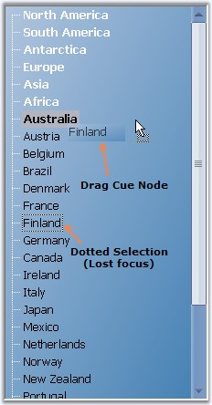
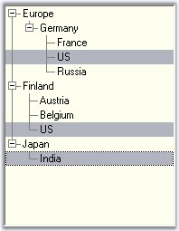

While performing a drag and drop operation, when a node is selected and dragged, the node will be drawn with a dotted rectangle, when it loses focus. This feature is enabled by setting the KeepDottedSelection property of the TreeViewAdv to true.
The semi-transparent image which is drawn besides the cursor, during the drag and drop operation, can be displayed at a distance from the mouse cursor, by enabling the KeepDragCapturePoint property.
The semi-transparent image that is drawn, can be hidden or shown using the ShowDragNodeCue property.
|
treeViewAdv Property |
Description |
|
KeepDottedSelection |
Value which indicates if the selected node must draw a dotted rectangle when it loses focus. |
|
KeepDragCapturePoint |
Gets or sets a value which indicates whether cue image should be drawn at a distance below the cursor during the drag drop operation. Default value is false. |
|
ShowDragNodeCue |
Specifies whether a semitransparent image of the selected node is drawn besides the cursor during the drag and drop operation. |

Figure 1133: Illustrates Selection features while Drag Drop
To cancel the selection or editing, use CancelMode and CancelEditMode methods.
|
treeViewAdv methods |
Description |
|
CancelMode |
Cancels the selection or editing of a node. |
|
CancelEditMode |
Cancels the edit mode of a particular node. |
|
LastMousePositionToClient |
Gets the last mouse position to the client or returns the last point at which the mouse is clicked. |
Row Selection
The FullRowSelect property allows you to specify if the entire row of the selected item is highlighted and clicking anywhere on an item's row causes it to be selected.
|
treeViewAdv Property |
Description |
|
FullRowSelect |
Specifies whether the whole row of a treeview needs to be selected on selecting a node of that row. |
|
treeViewAdv Method |
Description |
|
GetHeightOfRows |
To get the height of the rows of a tree from the start point to the end point. The parameters are,
(i)start - Represents the start point. (ii)end - Represents the end point. |
|
[C#]
this.treeViewAdv1.GetHeightOfRows(1, 2); |
|
[VB.NET]
Me.treeViewAdv1.GetHeightOfRows(1, 2) |

Figure 1134: FullRow MultiLevel Selected Nodes